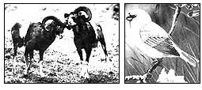

EARTH DIARY
On this particular issue, the rifle association is shooting its own foot.
THE JUNE 1988 ISSUE OF THE MAGazine American Hunter, a publication of the National Rifle Association, carried a provocative article concerning a lawsuit brought by the Sierra Club Legal Defense Fund on behalf of an endangered Hawaiian bird, the palila, and its human defenders. The article was based on a press release from a hunters' group called the Hawaii Wildlife Conservancy and its spokesman, John Carroll, a Honolulu lawyer who represented a number of Hawaiian sport hunters in the lawsuit. Having lost in court, Mr. Carroll evidently decided to take his arguments to the press. Given the accuracy of his press release, it's no wonder he did not prevail in a court of law. Here's a synopsis of the story behind the story.
The palila is a small honeycreeper, about the size of a sparrow. It, along with most other native Hawaiian birds and a horrifying number of endemic plants (an estimated 800 species), is endangered. Most of the plants have yet to be placed on the federal government's endangered-species list; the palila, however, was "listed" in 1967. The forces that have brought so much of Hawaii's wildlife to the brink of extinction-and pushed some species over-are many and varied. Over half of Hawaii's original native forests have been cleared by native Hawaiians for taro growing and by later residents for pineapple, sugar cane and other agricultural endeavors.
Spraying of pesticides and herbicides is a potent modern threat. But competition from exotic (Hawaiian conservationists prefer to call them "alien") species is also an important cause of extinction and near extinction. Plants and animals introduced to the islands from other lands have competed all too successfully with native species. The palila very nearly fell victim to this last threat.
Three decades ago, at the instigation of sport hunters, the Hawaii Department of Land and Natural Resources released on the Big Island a strain of wild European sheep known as mouflon, hoping that they would prosper, multiply and become a reliable game population. The mouflon gained a quick foothold, joining feral sheep and goats first brought to the islands by missionaries in the late 1700s. The introduced animals found the forage on the mid and upper slopes of Mauna Kea volcano quite satisfactory. Unfortunately for all concerned, the food preferred by the interlopers-tender leaves and shoots from the native mamane-naio forest-is precisely what the palila requires to survive. As the population of sheep and goats grew larger, their browsing began to tell on the forest, suppressing new growth to the point where the palila population began a precipitous plunge. The Endangered Species Act, which became law in 1973, forbids the "taking" of endangered species-taking being a catchall expression that includes outright killing as well as harming, harassing, trapping or wounding.
But what about willful destruction of the habitat that a species requires for its survival? Couldn't that also be considered a "taking"? That was the legal theory that Michael Sherwood and the Sierra Club Legal Defense Fund used to bring the palila into a federal court to fight for its survival. In 1978, Sherwood sued the state of Hawaii for failing to protect the palila. The lead plaintif in the case was the palila itself (a legal first), with the National Audubon Society, the Hawaii Audubon Society, the Sierra Club and a Hawaiian ornithologist named Alan C. Ziegler as coplaintiffs. The theory (advanced for the first time by Sherwood) was that by allowing damage to the palila's habitat, the state of Hawaii was "taking" the species.
Not outright killing of any individual bird, but harm to the species as a whole that might well push it over the brink of extinction and would certainly make its recovery to a more healthy population size-as also required by the Endangered Species Act-difficult if not absolutely impossible. At the time it was pretty clear scientifically that the feral sheep and goats were raising hell with the palila's forest. The same could not be said about the mouflon, but that was simply because the scientists hadn't yet got around to studying the mouflon's impact on the trees. Still, the lawsuit brought by Sherwood attacked only the feral sheep and goats, expressly leaving the mouflon out of the picture.
Shooters' groups and
environmentalists should be united-not bickering.
The state of Hawaii vigorously defended itself, saying that no one was shooting palilas and that that was all the Endangered Species Act forbade. A lengthy hearing was held in federal judge Samuel P. King's court in Honolulu. Evidence was presented from a number of scientists who had determined that the sheep and goats were threatening the survival and recovery of the palila. Whether that was a violation of the law was a matter for the lawyers to argue and the court to decide: Biologically, it was an indisputable fact. Judge King in due course issued a ringing opinion that supported the palila down the line. Feral sheep and goats were indeed damaging the palila's habitat to the detriment of the long-term prospects of the bird, and that was illegal, he found.
The Hawaii Department of Natural Resources was in violation of the Endangered Species Act by allowing the habitat to be so damaged. Judge King ordered the state to remove the feral sheep and goats. The state appealed to the Court of Appeals, which studied the case, heard oral arguments from Sherwood and his counterpart on the other side, and in 1981 forcefully sustained judge King, finding, as he had, that, in violation of the law, the alien invaders were wiping out the native forest that the birds depended on. The feral sheep and goats were banished from the palila's range.
Meanwhile, scientists were documenting the impact mouflon sheep were having on the mamane forest. To no one's surprise, they discovered that the same thing was happening: The mouflon were eating the palila out of house and home, and, if something drastic wasn't done, the palila might well vanish-perhaps within no more than 20 to 30 years. The conservationists swung into action. They made formal request to the Hawaii Department of Land and Natural Resources to remove the mouflons. The Department refused. The same plaintiffs, again led symbolically by the palila itself, threatened to sue. Eventually, they did sue, in 1985, and this time there was a full-blown, five-day trial. The case was in most respects a carbon copy of the original one. The plaintiffs were the same. The defendants were the same (except that this time several Hawaii sport hunting organizations and individuals joined the lawsuit on the side of the state).
Many of the witnesses were the same.
The lawyer for the palila was the same. The judge was the same. And the outcome was the same: In November 1986 Judge King found that the mouflon sheep were harming the palila and ordered them removed. Again the state appealed, although its heart did not seem to be in the action, having already spent not a few taxpayer dollars on its futile defense of the original case. The hunters would not let the state give up, however. On July 22, 1988, the Ninth Circuit Court of Appeals affirmed. The hunters still seem disinclined to give up, even in the face of defeat after stinging defeat in various courts of law, and have apparently decided to take their case to the public. The
American Hunter article is presented in a regular column titled "Hunting-An American Tradition." It says that the palila "might be endangered," that "the `environmentalists' never documented a single instance of adverse modification of... habitat showing that the presence of mouflons `harmed' the palila . . . , "that the judge erred seriously in his decision and that the actual intention of "misguided environmentalists" may be "to exterminate America's other wild game.
" The article, in short, is quite fantastic-as in "based on fantasy." Still, the piece and the press release it was based on have found their way into quite a few mailboxes and newspapers by now, and could well do some damage, since simple inaccuracy has seldom sufficed to keep a vigorous assertion from being published or believed. The most serious charge is that the palila is not being harmed by the mouflon sheep. Here's what Mike Sherwood has to say regarding that.
"Every witness who addressed this question testified that the mouflon are in fact harming the palila because the sheep eat mamane tree leaves, bark and, most important, young seedlings and shoots. Mamane happens to be the favored food item for the mouflon-the biologists refer to it as an `ice cream' plant for the sheep. Moreover, because there were no naturally occurring browsing and grazing mammals in Hawaii, the mamane had no need to evolve defenses (such as thorns, bitter-tasting bark or poisonous sap) to browsing or grazing pressure. Thus, as the older mamane trees are killed or die off naturally, insufficient new trees are being allowed to grow to maturity to replace them, and the forest declines. It is prevention of mamane regeneration caused by the eating of shoots and seedlings that is the critical problem. Because the palila cannot survive without mamane, if the forest were allowed to continue its decline, eventually the palila would go extinct. "Virtually every witness agreed with all this, including expert witnesses for both the state and the hunters.
" The other charge-that "misguided environmentalists" seek to eliminate America's wild game-is plain silly. What the author may have meant is that environmentalists would like to eliminate alien animals when they compete with native creatures, especially when they are harming those natives. Many people certainly believe that, though it can be fiercely controversial. (Some years ago, for example, the Park Service took steps to remove introduced wild burros from the Grand Canyon, which proved very unpopular in some circles.) It's a complicated issue and deserves careful examination in each specific instance where it arises.
The palila/mouflon situation, however, is far simpler than most similar examples of the problem. Mouflon sheep have resided in Hawaii for less than 30 years; there's no longterm tradition of mouflon-hunting on Mauna Kea; and mouflon sheep exist in several other places in Hawaii, where they could be hunted. Finally, there may be a happy ending to this 10-year-old legal battle: Scientists report that the mamane-naio forest is improving nicely since the last mouflon were removed in early 1988, and that the palila population seems to be rebounding as well, up by as much as 25% in the same period.
Editor's Note: Hunters in general,
of course, are the major source of money for the protection of wildlife habitat, both for game and non game species. And responsible hunters are, themselves, often under either ignorant or unfair attack. For that side of the story, turn to 114-098-01 .
|
 The Hawaiian native palila (right) is threatened by the introduced mouflon sheep (left). |
|
|